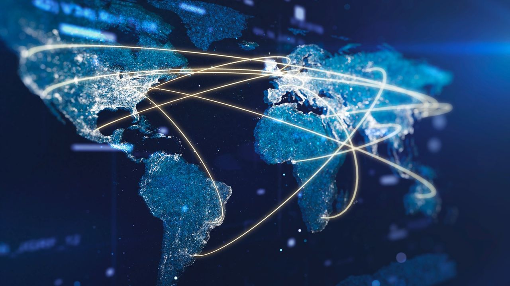

Globalisation
Global sourcing
Global sourcing: Global sourcing is the method of gaining inputs like mining materials or labour from other countries. The most common however, is machinery such as CAT and komatsu. Main positives are access to expertise that may not exist in the local country, and lower costs due to different currencies. The main disadvantage is the large fulfilment time of shipped goods from other countries, possibly leading to getting equipment late decreasing opportunity profits.
Economies of scale
Economies of scale: When a company scales production to larger amounts, the cost per unit falls because the fixed costs are spread wider. This allows higher competition and the ability to expand into other markets which raises profit ceilings. The main downsides are the loss of flexibility as a result of the larger scale of the company and overspending if supply drops. BHP's iron ore mine in pilbara produces over 280 million tonnes annually lowering the costs of BHP products.
Scanning and learning
Scanning and learning: Scanning and learning is the act of adopting best practices and innovations from other companies or countries to improve operations. This can involve observing international competitors, learning from their technology, and applying those lessons to local operations. The positives of scanning and learning are that it allows companies to stay competitive, improve efficiency, and reduce mistakes by following proven methods. It can also lead to faster adoption of new technologies that improve productivity. The negatives are the costs of implementing these practices, which may not always fit the local environment, and the risk of relying too heavily on external ideas rather than developing unique solutions. BHP adopted autonomous haul truck technology that was pioneered internationally, which improved productivity and safety in its Australian mines, but required large investment and adaptation to local conditions.
Research & development
Research and development is the act of investing in new projects and technologies to improve sustainability and efficiency in operations. This can include partnerships with other companies, universities, or governments to create innovations that reduce emissions or improve production methods. The positives of research and development are that it drives long‑term competitiveness, supports environmental commitments, and can create new markets for the company. It also improves reputation by showing leadership in sustainability. The negatives are the high upfront costs, the long timelines before benefits are realised, and the uncertainty of whether projects will succeed. In 2021, BHP partnered with Fortescue and Mitsubishi on green hydrogen research aimed at decarbonising steelmaking, and also invested in carbon capture and storage projects with international universities. These projects show how R&D supports global sustainability goals but require significant capital and long‑term commitment.
